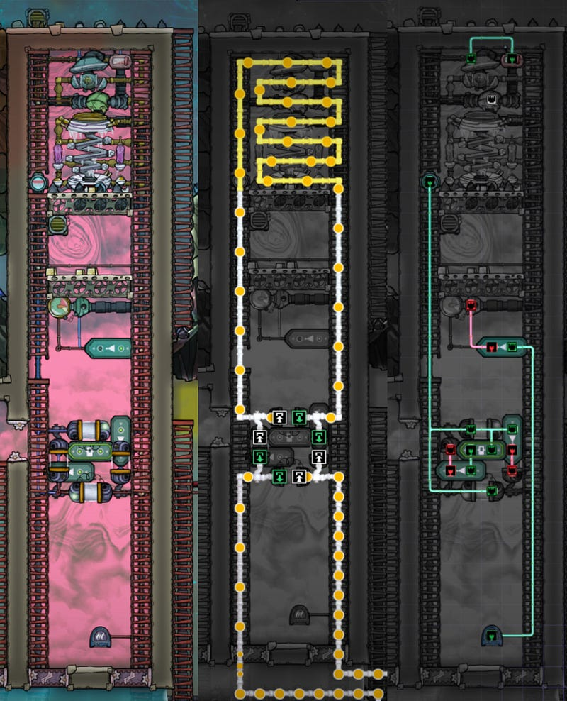
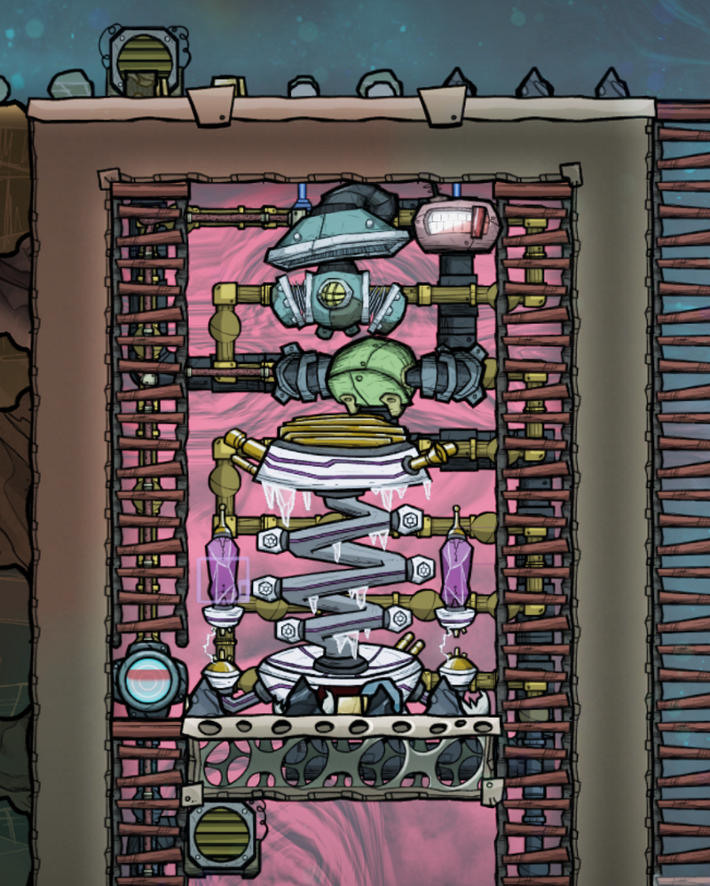
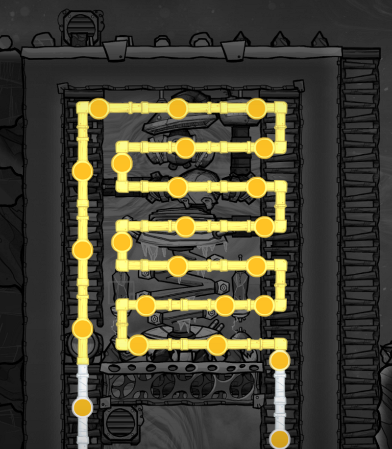
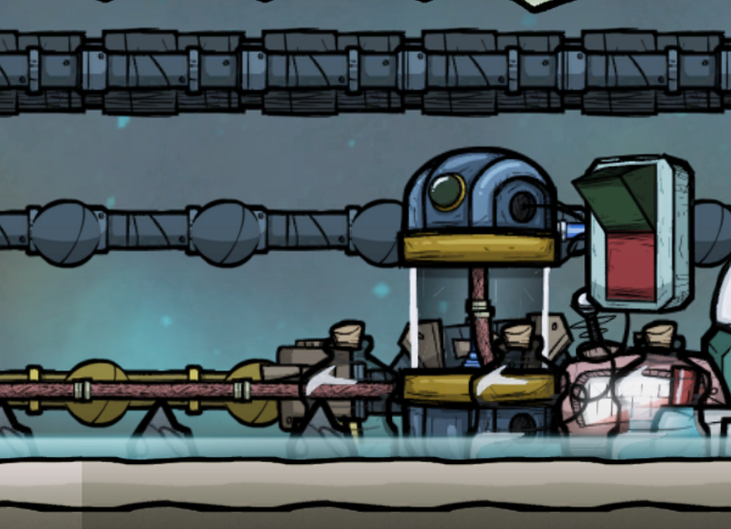
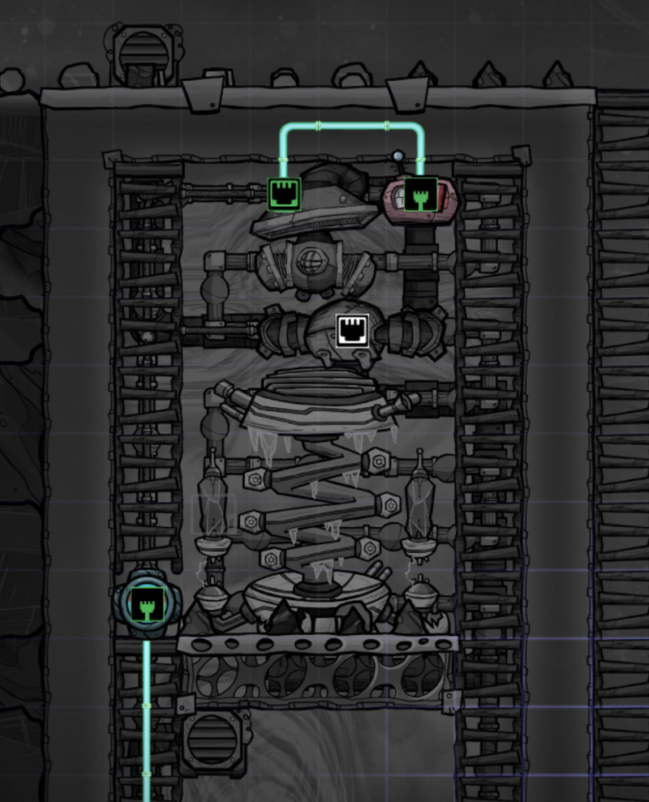
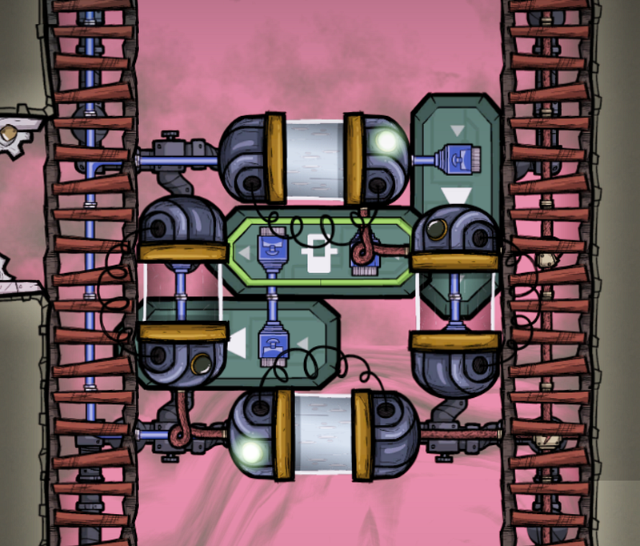
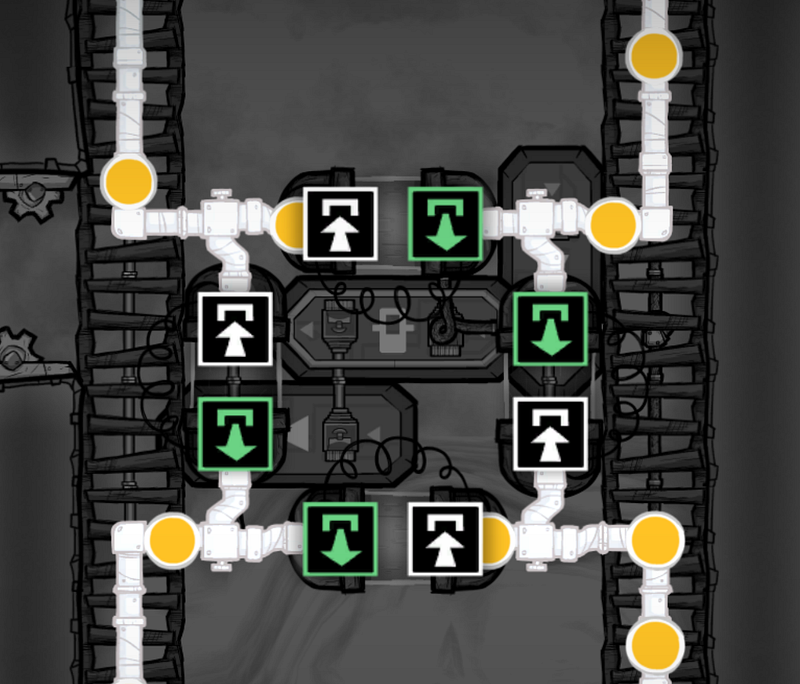
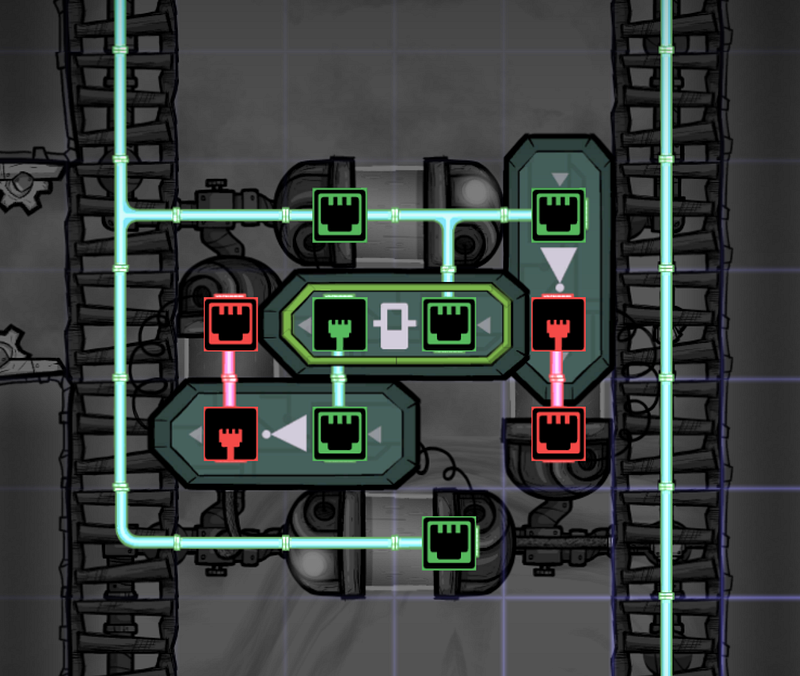
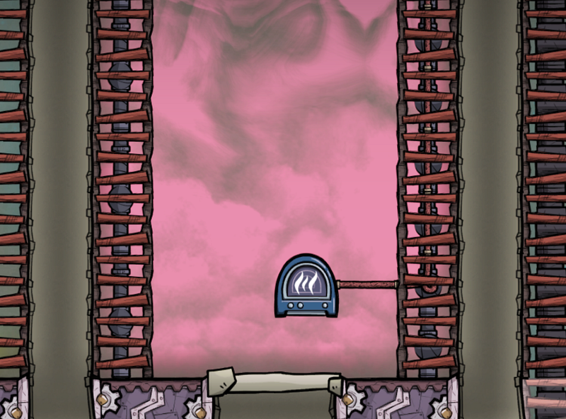

Petroleum Cooling Loop With AETN
Petroleum Cooling Loop With AETN
I created a nice loop within a loop of petroleum so that we can take chunks of petroleum and lower their temperature to a specific point before accepting more new, warmer (possibly to the point of scolding hot) payload — which significantly increases the efficiency of such cooling loops

Petroleum is a very good coolant in Oxygen Not Included, as its freezing point is at -57.1 degrees celsius, with a heat capacity of 1.760 and thermal conductivity of 2. Compare this against water, which freezes at -0.6 degrees celsius and has a heat capacity of 4.179 and thermal conductivity of 0.609.
The problem is that when they are created, they are usually scolding hot. In some games I’ve been fortunate to have Slush Geysers around to take off the heat of crude oil/petroleum before doing anything with them, but this is not necessarily a constant source.
So I wanted something more constant using the Anti-Entropy Thermal Nullifier (AETN), which is sort of a cheat :D as it takes away entropy just by feeding it hydrogen.
The Main Setup
The main setup is simple. A Gas Pump sits atop the AETN to provide hydrogen for it, but we only do this when the hydrogen around the AETN is below a certain temperature.
For the time being I’ve been manually editing this field from between -5 to -20 degrees celsius, but if the system is actively cooling down hot petroleum, realistically this value can just be -5 or something, as the hydrogen temperature usually floats around somewhere around 0 degrees celsius (once stable)

Behind the AETN is a series of Radiant Pipes, which exchange the heat of petroleum with the surrounding hydrogen.
Since this room is big, one could argue that we could fill the entire room with Radiant Pipes, but I find that the AETNs are most effective for its immediate surroundings. If we filled up the entire room with Radiant Pumps, it would take a long time for the hydrogen not immediately near the AETN to cool down.
So in this setup I’m treating the remaining space more for hydrogen reserve than a cooling conductor.
The pipes are made out of Abyssalite and Gold, but if petroleum is all that’s going to be carried, I guess you can be cheap and use something else as well. I just didn’t want to risk anything.
The pipes form a big loop, and new payload is only added when a switch (explained below) is enabled to allow in take of hot petroleum.

The pipes are connected to a feed of petroleum with a manual switch. I opted for manual control just to make sure I can add more petroleum or drain them whenever I wanted.
For various reasons it’s a bit of a mess, so I’m not including the pipe and automation schematics for this part of the system.

The automation for AETN is simple as well. The Gas Pump is enabled when the detected temperature rises over a certain point, thereby triggering the AETN to start.

The Liquid Pipe Thermal Sensor on the left bottom is used as a trigger for the next component.
Loop Within A Loop
Now, suppose a scalding hot petroleum is fed into this system.
It will initially destroy the cool environment, exchanging its heat with the hydrogen.Even with the AETN going full throttle, the initial temperature is going to go up to somewhere around 30 to 40 degrees celsius.
Once the hydrogen gets up to that temperature, this means that the minimum temperature that the petroleum can achieve is also going to be limited to 30 to 40 degrees celsius.
But presumably you want the liquid colder (maybe around -10 degrees celsius), especially if you are intending to use the petroleum as a coolant like me.
With the AETN enabled, the hydrogen temperature will certainly drop as it runs. But remember that all this while a steady flow of petroleum that is significantly warmer than the hydrogen is passing through the same system.
This means that not a whole lot of heat is going to be taken away from the petroleum, and it will take a lot of time to cool the hydrogen to the point of effectiveness.
This is going to sound silly, but here’s the thing: it’s much easier to keep cooling the same payload over and over to reach the desired temperature. So why not close the loop around AETN and its immediate vicinity?
Making A New Loop
So we want the circulate the same petroleum chunks around the AETN until a certain temperature is reached. This means that for every iteration, the hydrogen will be cooler than the previous, and we can make the petroleum as cold as we want relatively fast (albeit it being only a portion of the entire payload)
So in the entrance/exit of the AETN piping, I created this setup. This is hooked to the Liquid Pump Thermal Sensor that was connected to the last Radiant Pipe next to the AETN.

The piping is a bit confusing, but here’s what we want to do. If the payload is still warmer than our desired temperature, we open the horizontal Liquid Shutoffs, and close the vertical ones.
This effectively detaches the loop around the AETN with the rest of the loop: No new petroleum comes in, while the same chunk of petroleum circulates around the AETN.

When the petroleum reaches the desired temperature, we release it back to the main loop (and accept a new batch of hot petroleum) by opening up the vertical Liquid Shutoffs, and closing the horizontal ones.
Here’s the automation that goes along with the shutoffs:

Now it may look as though we have way more automation than necessary, but here’s the thing: we cannot just switch the vertical shutoffs simultaneously because we may have juuuuuust enough liquid inside the smaller loop to completely fill the loop.
Liquid cannot circulate when the entire piping is full, so we would be taking away the ability for the petroleum to actually loop around the AETN.
This means that the loop needs just a slight bit of slack for it to circulate. The bigger loop’s slack is controlled manually as described earlier, but here, we need to be slightly smarter.
So we close the vertical shutoff on the right side when we receive the signal from the Liquid Pipe Thermal Sensor described earlier.
The horizontal shutoffs need to be opened to allow continued circulation.
The vertical shutoff on the right controls the incoming petroleum from the main loop, so by doing this we stop new petroleum from coming in.
At the same time we do the same thing to the vertical shutoff on the left, but we do so using a Buffer Gate. This means that this shutoff is going to be open for slightly longer than the other, allowing some amount of liquid to get out of the smaller loop. This makes sure that we have the slack that we desire.
Once the payload in the smaller loop reaches the desired temperature, we do the reverse, and open up the vertical shutoffs, and close the horizontal ones.
With this setup, you get a cooling loop that creates chunks of really really cold petroleum. It will take a bit longer for the entire payload to cool down, but in this way you will have chunks of really cold coolants destroying the heat while they circulate, instead of the entire system being lukewarm. I find this to be much more effective.
Finally, I take the hydrogen from a relatively big Electrolyzer farm which creates air for my base. I need to regulate the amount of hydrogen that comes in, so I have a Gaseous Element Sensor at the bottom of the room.

Hydrogen fills up from the top, so once we can detect hydrogen at this level we close the shutoff from the farm, and avoid spillage.
We can certainly over-pressurize the room and do away with the sensor, but I find that I often need to get Duplicants to enter the room to fix a few things here and there. If the room is over-pressurized, I run the risk of having the hydrogen burst out of the room (even if the entrance is at the bottom), so I like regulating the hydrogen intake like this.
Happy digging.